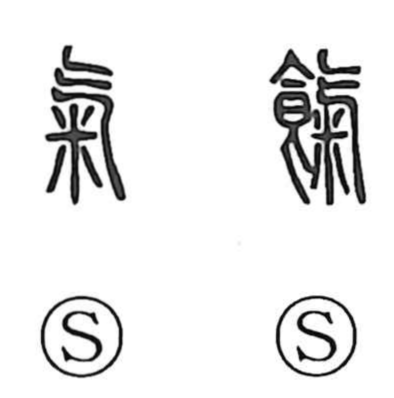

Explanation
気 abbreviates 氣, which combines 气 with 米. 气 pictures drifting cloud vapour and supplies the sound. This breath or vapour was regarded as the source of life; 米 is the grain that nourishes it. The fuller character joins vital breath with its material sustenance.
The same connection between food and sustaining life appears in 餼, provisions presented to a guest. 氣 itself comes to embrace breath, air, vigour, and the force through which living activity continues.
The word extends from that animating force to a person's temperament, intention, and mood. It can also describe the atmosphere of a place, a drifting scent, or the changing conditions of a season. These uses retain something of the invisible but perceptible breath represented by 气.